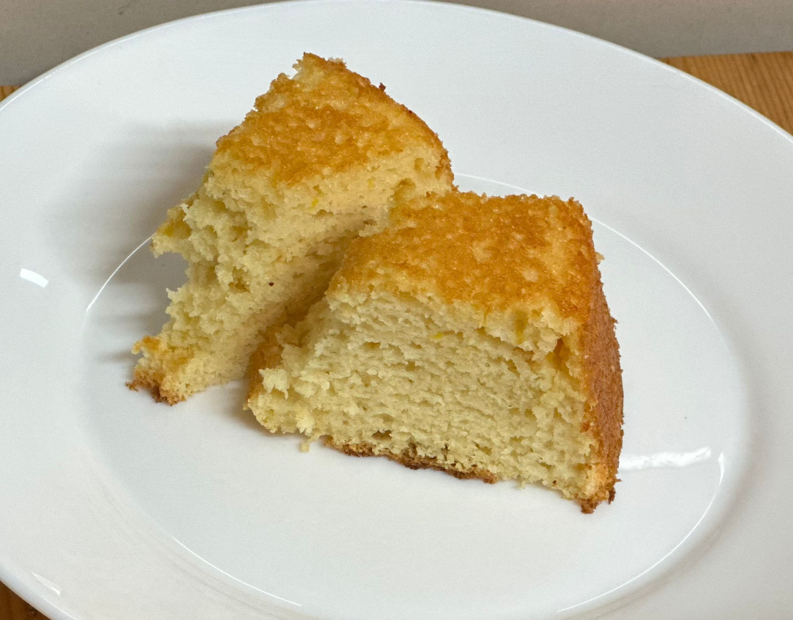

Bolo de limão que faz bem

Ingredientes
- 4 ovos (clara + gema)
- 70 g de açúcar demerara
- 50 g de óleo de coco
- 50 ml de sumo de limão
- 70 g de mix de farinha sem glúten
- 70 g de farinha de amêndoas
- 10 g de fermento químico
- Raspas de 1 limão
Modo de preparo
- Bater as claras em neve com o açúcar até o ponto de bico firme.
- Em um bowl, bater as gemas com o óleo de coco e o sumo de limão.
- Adicionar as farinhas, o femento e as raspas de limão e misturar bem.
- Acrescentar 1/3 da clara em neve e misturar. Incorporar o restante da clara em neve e incorporar delicadamente, mexendo de baixo para cima.
- Despejar em uma assadeira untada e assar a 180º C por aproximadamente 30 minutos.
Observação
- Durabilidade:2 dias em temperatura ambiente. 5 a 7 dias refrigerado. 3 meses congelado.
- Receita "Doce que faz bem".